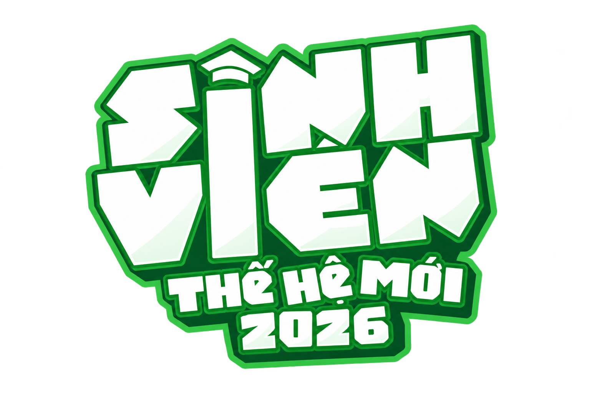

01 // NGƯỜI TRẺ
Không biết quê có thể làm gì
Người trẻ khó tìm thấy đầu mối việc làm, học nghề hay cộng tác nếu cơ hội ở địa phương chưa được giới thiệu theo cách dễ tiếp cận.


HSU lửa bánh bền lâu - đậm sâu làng nghề!
Có những con đường về quê không bắt đầu bằng một tấm bản đồ. Chúng bắt đầu bằng nỗi nhớ, một câu hỏi chưa có lời đáp và một người chịu mở cửa chỉ nghề.
“Em muốn về quê nhưng em nghĩ quê em không có việc phù hợp với em.”
Trong câu nói ấy có hai điều cùng lúc: thương nhà, và ngại rằng những gì mình biết làm sẽ chẳng tìm được chỗ đứng ở quê. Nhóm sinh viên HSU mang câu hỏi đó đến Phú Hòa Đông — một làng nghề nơi câu trả lời không nằm trên giấy, mà được trao từ người này sang người khác.
Đôi vợ chồng trong câu chuyện đã làm ở xí nghiệp hơn mười năm. Khi muốn trở về Cà Mau, họ tìm đến học tráng bánh để gây dựng sinh kế. Người giữ nghề cho mượn lò, dụng cụ và chỉ họ cách bắt đầu. Từ những ngày học nghề, họ mang theo một kỹ năng về quê; về sau, họ trở lại thăm cô với món quà cảm ơn.
Có một khoảng cách rất ngắn giữa “mình chưa biết làm” và “mình có thể bắt đầu”: đôi khi đó là một cánh cửa được mở, một dụng cụ được cho mượn, một người kiên nhẫn chỉ dẫn.
Rồi nhóm nghe thêm câu chuyện của một người mẹ muốn con gái hiểu nghề. Cô để con bắt đầu từ những việc nhỏ — nhóm lửa, xay bột — trong khi việc học vẫn được ưu tiên. Một người mang nghề đi xa để trở về. Một người giữ nghề ở lại, nhưng không buộc con phải chọn thay mình.
Hai cách yêu quê khác nhau, cùng nhắc rằng con đường trở về không có một khuôn mẫu. Điều gì sẽ xảy ra nếu người trẻ nhìn thấy nhiều lựa chọn hơn trước khi phải quyết định?
Trao một nghề cũng là trao quyền được học, được thử và được tự chọn.
Người mẹ cho con làm quen với việc nhóm lửa, xay bột; việc học văn hóa vẫn được đặt lên trước. Tình yêu nghề ở đây không phải một lời ép buộc nối nghiệp, mà là một cánh cửa hé mở để con gái có thể bước vào khi sẵn sàng.
Người trẻ có thể rời quê vì không thấy lối đi. Cơ sở địa phương có thể loay hoay vì thiếu người. Đôi khi, điều còn thiếu giữa hai phía chỉ là một thông tin rõ ràng và một lần gặp mặt.
Hãy hình dung một kỹ năng đang nằm yên trong cuốn sổ học tập của ai đó; cách đó không xa, một cơ sở lại đang cần đúng kỹ năng ấy để giới thiệu sản phẩm của mình. Hai bên có thể cùng ở một vùng đất, nhưng nếu không biết tìm nhau ở đâu, khoảng cách vẫn dài như những chuyến đi xa.
Với nghề bánh tráng, khoảng cách bắt đầu từ những câu hỏi gần gũi hơn: gặp ai để học, có thể thử việc gì trước, học vào thời gian nào? Người giữ nghề có kinh nghiệm để trao; người trẻ cần một nhịp học vừa với đời sống của mình. Cơ hội chỉ thật sự mở ra khi những điều tưởng như nhỏ ấy được nói rõ.
Quê hương không nên chỉ là nơi để nhớ. Đó cũng có thể là nơi ta chọn ở lại, chọn trở về, học một nghề, cộng tác từ xa — hoặc đi tiếp trên con đường khác, với hiểu biết rõ ràng hơn.
Người trẻ khó tìm thấy đầu mối việc làm, học nghề hay cộng tác nếu cơ hội ở địa phương chưa được giới thiệu theo cách dễ tiếp cận.
Cơ sở sản xuất và hộ kinh doanh có thể cần người hỗ trợ thiết kế, truyền thông, bán hàng trực tuyến hoặc ứng dụng công nghệ, nhưng chưa kết nối được với kỹ năng phù hợp.
Nghề bánh tráng có giá trị kinh tế và văn hóa; việc trao truyền nghề và tạo vai trò mới cho người trẻ là một phần của câu chuyện gìn giữ ấy.
Các con số trên là mục tiêu trong hồ sơ dự án, không phải kết quả đã hoàn thành.
Ý tưởng của nhóm là một bản đồ cơ hội nghề nghiệp tại quê nhà: mỗi cơ hội được xác minh, mô tả đủ rõ và nối với người có kỹ năng phù hợp.
Một chiếc ghim trên bản đồ chưa thể kể hết một cơ hội. Phía sau nó cần có tiếng nói của người đang cần giúp đỡ: cơ sở cần ai, người đó sẽ làm gì, cần có mặt khi nào, được nhận lại điều gì. Nhóm muốn bắt đầu bằng việc hỏi cho kỹ, xác minh cho thật, rồi mới đưa từng cơ hội lên bản đồ.
Ở phía bên kia, người trẻ cũng có điều để trao: đôi tay muốn học nghề, con mắt biết kể chuyện bằng hình ảnh, khả năng làm nội dung hay một ý tưởng kinh doanh. Khi cả nhu cầu lẫn năng lực đều được gọi đúng tên, cuộc gặp đầu tiên sẽ bớt là may rủi và có thêm cơ sở để thành công việc thật.
Bản đồ không chọn đường thay ai. Nó bật sáng những lối rẽ — để người trẻ và người làm nghề tự nhìn thấy nhau, tự hỏi, rồi cùng quyết định có bước tiếp hay không.
Công việc toàn thời gian, bán thời gian hoặc thời vụ tại cơ sở và hộ kinh doanh trong vùng.
Học nghề, học việc và tìm hiểu nghề bánh tráng truyền thống qua trải nghiệm thực tế.
Thiết kế, marketing, quay dựng, công nghệ và bán hàng trực tuyến có thể giúp cơ sở địa phương phát triển.
Cơ hội làm đại lý, phân phối đặc sản và hợp tác kinh doanh với các cơ sở trong vùng.
Workshop, tour làng nghề và du lịch cộng đồng nối người làm nghề với khách tham quan.
Khảo sát làng nghề → xác minh cơ hội → xây hồ sơ kỹ năng và bản đồ số → thử nghiệm kết nối → đo lường trước khi mở rộng.
Ví dụ minh họa: một cơ sở cần hỗ trợ bán hàng trực tuyến; một người trẻ có kỹ năng nội dung muốn cộng tác với quê nhà. Bản đồ giúp hai bên thấy yêu cầu, thời gian và cách liên hệ trước khi quyết định có phù hợp hay không.
Cơ sở sản xuất, hộ kinh doanh, doanh nghiệp nhỏ, dịch vụ và điểm du lịch có nhu cầu tuyển dụng hoặc hợp tác.
Sinh viên, thanh niên tại địa phương, người đi làm xa quê, freelancer và người muốn học nghề hoặc khởi nghiệp.
Gia đình người lao động, nhà trường, cộng đồng địa phương, khách du lịch và người tiêu dùng cùng hưởng lợi từ kết nối bền vững.
Đến gặp cơ sở, hộ kinh doanh và người giữ nghề.
Kiểm tra nhu cầu trực tiếp với đơn vị cung cấp.
Ghi rõ kỹ năng, thời gian, địa điểm và quyền lợi.
Hiển thị cơ hội theo địa điểm và nhóm nhu cầu.
Kết nối kỹ năng người trẻ với nhu cầu địa phương.
Kiểm tra kết nối có tạo ra việc làm, học nghề hay hợp tác thật.
Muốn một cuộc gặp dẫn tới thay đổi, nhóm phải đi chậm qua những bước ít hào nhoáng hơn: lắng nghe, kiểm chứng, thử kết nối và quay lại hỏi chuyện gì đã xảy ra.
Trước khi đếm số kết nối, hãy bắt đầu bằng một cuộc trò chuyện tử tế. Hỏi người làm nghề đang cần gì. Hỏi người trẻ đang có thể làm gì. Ghi lại cơ hội bằng lời lẽ đủ rõ để không ai phải đoán — rồi mới thử đưa hai phía đến gần nhau.
Sau cuộc gặp đầu tiên, câu chuyện vẫn chưa kết thúc. Người trẻ có được gặp cơ sở không? Cơ sở có tìm được người phù hợp không? Có ai bắt đầu học nghề, nhận việc, hay cùng thử một hướng kinh doanh? Mỗi câu trả lời sẽ giúp nhóm sửa bản đồ để nó gần với đời sống hơn.
Các mốc 30, 60 và 90 ngày dưới đây là đích dự kiến trong hồ sơ — những điều nhóm hy vọng sẽ kiểm chứng được qua hành động, không phải kết quả đã đạt.
Tiếp cận 10 cơ sở, khảo sát 3–4 nơi và xác minh 50 cơ hội. Đồng thời, giới thiệu dự án đến 500 người trẻ để hình thành dữ liệu ban đầu từ cả hai phía.
Thử bản đồ số, hồ sơ kỹ năng, biểu mẫu đăng ký và matching; tổ chức phỏng vấn hoặc gặp trực tiếp giữa người trẻ với cơ sở.
Đánh giá mô hình qua từng nhóm cơ hội trước khi hoàn thiện sản phẩm và mở rộng cách làm.
Đây là chỉ tiêu dự kiến trong hồ sơ, không phải kết quả đã hoàn thành. Tiến độ thực tế cần được cập nhật theo khảo sát và vận hành.
Đôi vợ chồng mang nghề tráng bánh từ Phú Hòa Đông về Cà Mau — mang theo những điều đã học và lòng biết ơn dành cho người mở lối. Người mẹ trao nghề cho con gái từ những việc nhỏ, để con đến gần nghề theo nhịp của riêng mình.
Một câu chuyện là hành trình ra đi rồi trở về. Một câu chuyện là tình yêu được trao lại mà không buộc phải nhận lấy. Ở giữa hai câu chuyện ấy là điều dự án mong muốn: để người trẻ biết quê nhà có những lối nào, rồi tự chọn lối khiến mình muốn bước tiếp.
Nhớ một miền quê. Trở về bằng một kỹ năng. Yêu thương bằng cách góp phần mình có thể. Và biết ơn người đã trao cho ta cơ hội bắt đầu. Một ngày nào đó, người được chỉ nghề hôm nay có thể sẽ là người mở cửa cho ai khác.